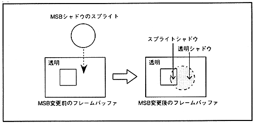

MSB shadow is valid only when the sprite type is type 2-7, and the most significant bit (MSB) of sprite data is 1. Depending on the value of 15 bits other than MSB, sprite shadow There are two types of 092 transparent shadows. A sprite shadow is one whose MSB is 1 and all other 15-bit values are not 0. Transparent shadows have an MSB of 1 and all other 15-bit values are 0. However, if the dot color data satisfies the conditions for normal shadows, it is determined as a normal shadow even if the conditions for sprite shadows are satisfied.
∙ MSB shadow sprite data is created by changing only the MSB to 1 to the MSB shadow sprite shape for the frame buffer data in which VDP1 has already been written. (Refer to “ MSB ON ” in “ VDP1 User's Manual .”) At this time, all bits of the frame buffer data before changing the MSB are 0. If not, that is, if a normal sprite has already been written, it becomes a sprite shadow and casts a shadow on that sprite character.
If all the bits of the frame buffer data before changing the MSB are 0, that is, if it is transparent, it becomes a transparent shadow, and for the scroll screen whose priority is one lower than the sprite of that transparent shadow To add a shadow. A scroll screen and a back screen that are shaded by a transparent shadow sprite can be specified for each screen.
∙ When using a sprite window, this MSB shadow cannot be used. Please refer to 8.1 Window Area for the sprite window.
∙ Sprite shadow and transparent shadow are shown in Fig. 14.4, and MSB shadow sprite data is shown in Fig. 14.5.
Figure 14.4 Sprite shadow and transparent shadow
